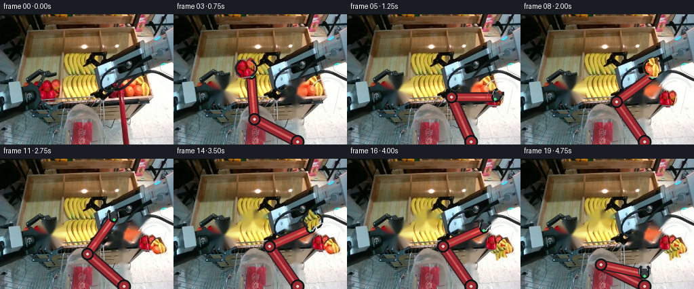
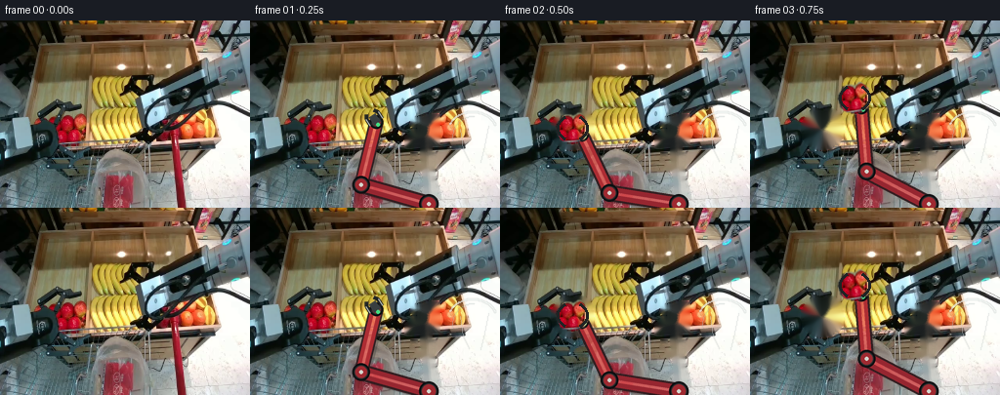

CODING AGENTS AS PIXEL WORLD MODELS
traex/GPT-5.6-Sol · common50_0000
点击播放 · 原生 RGB 像素
逐轮保存的候选
回放视频、检查图与代码变化。
每份候选均可单独播放。实际图片检查记录在下方工具轨迹中。
候选 01播放与检查图
点击播放 · 原生 RGB 像素


展开代码变化
--- 上一保存版本
+++ 本次保存版本
@@ -0,0 +1,310 @@
+"""Generate the requested 5-second RGB manipulation video.
+
+The implementation deliberately uses only the supplied first frame. The
+photographic scene remains the background; small, local pixel sprites are
+lifted from it and a stable, articulated right arm is rendered over it.
+"""
+from pathlib import Path
+import math
+
+import cv2
+import numpy as np
+from PIL import Image, ImageDraw, ImageFilter
+
+import artifact_io
+
+
+ROOT = Path(__file__).resolve().parent
+W, H = 256, 192
+
+
+def smoothstep(t):
+ t = max(0.0, min(1.0, float(t)))
+ return t * t * (3.0 - 2.0 * t)
+
+
+def lerp(a, b, t):
+ t = smoothstep(t)
+ return (a[0] * (1 - t) + b[0] * t,
+ a[1] * (1 - t) + b[1] * t)
+
+
+def polygon_mask(points, blur=0.0):
+ m = Image.new("L", (W, H), 0)
+ ImageDraw.Draw(m).polygon(points, fill=255)
+ if blur:
+ m = m.filter(ImageFilter.GaussianBlur(blur))
+ return np.asarray(m)
+
+
+def fruit_asset(frame, kind, center, radius):
+ """Extract a softly edged object sprite from the supplied RGB pixels."""
+ cx, cy = center
+ rx, ry = radius
+ x0, y0 = max(0, cx-rx-4), max(0, cy-ry-4)
+ x1, y1 = min(W, cx+rx+5), min(H, cy+ry+5)
+ patch = frame[y0:y1, x0:x1].copy()
+ ph = cv2.cvtColor(patch, cv2.COLOR_RGB2HSV)
+ yy, xx = np.ogrid[y0:y1, x0:x1]
+ ellipse = ((xx-cx)/(rx+0.01))**2 + ((yy-cy)/(ry+0.01))**2 <= 1.0
+
+ if kind == "apple":
+ hue = (ph[..., 0] <= 13) | (ph[..., 0] >= 168)
+ colored = hue & (ph[..., 1] > 65) & (ph[..., 2] > 45)
+ raw = colored & ellipse
+ elif kind == "orange":
+ hue = (ph[..., 0] >= 5) & (ph[..., 0] <= 31)
+ raw = hue & (ph[..., 1] > 70) & (ph[..., 2] > 55) & ellipse
+ else:
+ # The actual yellow texture is retained inside a recognizable star.
+ raw = np.zeros(patch.shape[:2], bool)
+ pcx, pcy = cx-x0, cy-y0
+ pts = []
+ for k in range(10):
+ ang = -math.pi/2 + k*math.pi/5
+ r = (min(rx, ry) if k % 2 == 0 else min(rx, ry)*0.46)
+ pts.append((int(round(pcx+math.cos(ang)*r)),
+ int(round(pcy+math.sin(ang)*r))))
+ cv2.fillPoly(raw.view(np.uint8), [np.array(pts, np.int32)], 1)
+
+ # Close holes caused by highlights, retain the component nearest its centre,
+ # and include its dark natural contour with a tiny dilation.
+ u = raw.astype(np.uint8) * 255
+ u = cv2.morphologyEx(u, cv2.MORPH_CLOSE, np.ones((5, 5), np.uint8))
+ if kind != "star":
+ count, labels, stats, cents = cv2.connectedComponentsWithStats(u)
+ if count > 1:
+ qx, qy = cx-x0, cy-y0
+ valid = [(i, (cents[i, 0]-qx)**2+(cents[i, 1]-qy)**2)
+ for i in range(1, count) if stats[i, cv2.CC_STAT_AREA] > 8]
+ if valid:
+ lab = min(valid, key=lambda q: q[1])[0]
+ u = (labels == lab).astype(np.uint8)*255
+ u = cv2.dilate(u, np.ones((3, 3), np.uint8), iterations=1)
+ alpha = cv2.GaussianBlur(u, (0, 0), 0.75)
+ return {"rgb": patch, "alpha": alpha, "origin": (x0, y0),
+ "center": center, "radius": radius, "kind": kind}
+
+
+def source_mask(asset):
+ """Return a generous mask that removes an object and its contact shadow."""
+ mask = np.zeros((H, W), np.uint8)
+ x0, y0 = asset["origin"]
+ ah, aw = asset["alpha"].shape
+ mask[y0:y0+ah, x0:x0+aw] = np.maximum(
+ mask[y0:y0+ah, x0:x0+aw], asset["alpha"])
+ mask = cv2.dilate((mask > 18).astype(np.uint8)*255,
+ np.ones((7, 7), np.uint8), iterations=1)
+ return mask
+
+
+def paste_asset(canvas, asset, center, scale=1.0, angle=0.0, opacity=1.0):
+ rgb = Image.fromarray(asset["rgb"])
+ alp = Image.fromarray(asset["alpha"])
+ if abs(scale-1.0) > 1e-4:
+ size = (max(1, round(rgb.width*scale)), max(1, round(rgb.height*scale)))
+ rgb = rgb.resize(size, Image.Resampling.LANCZOS)
+ alp = alp.resize(size, Image.Resampling.LANCZOS)
+ if abs(angle) > 1e-4:
+ rgb = rgb.rotate(angle, resample=Image.Resampling.BICUBIC, expand=True)
+ alp = alp.rotate(angle, resample=Image.Resampling.BICUBIC, expand=True)
+ if opacity < 1:
+ alp = alp.point(lambda p: round(p*opacity))
+ x = round(center[0]-rgb.width/2)
+ y = round(center[1]-rgb.height/2)
+ canvas.paste(rgb, (x, y), alp)
+
+
+def draw_arm(end, grip_open, carrying=False):
+ """Render a rigid, anti-aliased two-link arm rooted at the right base."""
+ S = 3
+ layer = Image.new("RGBA", (W*S, H*S), (0, 0, 0, 0))
+ d = ImageDraw.Draw(layer)
+ anchor = np.array([183.0, 188.0])
+ tip = np.array(end, dtype=float)
+ v = tip-anchor
+ vn = np.linalg.norm(v)
+ if vn < 1:
+ v = np.array([0., -1.]); vn = 1
+ direction = v/vn
+ wrist = tip-direction*12.0
+ l1, l2 = 72.0, 66.0
+ q = wrist-anchor
+ dist = float(np.linalg.norm(q))
+ dist = min(l1+l2-0.2, max(abs(l1-l2)+0.2, dist))
+ qn = q/(np.linalg.norm(q)+1e-6)
+ a = (l1*l1-l2*l2+dist*dist)/(2*dist)
+ hh = math.sqrt(max(0.0, l1*l1-a*a))
+ p = anchor+qn*a
+ perp = np.array([-qn[1], qn[0]])
+ e1, e2 = p+perp*hh, p-perp*hh
+ # Prefer the elbow that bends left/up and avoid sudden branch flips.
+ elbow = e1 if (e1[0] < e2[0]) else e2
+
+ def P(p): return tuple(int(round(z*S)) for z in p)
+ A, E, R, T = P(anchor), P(elbow), P(wrist), P(tip)
+ # A restrained contact shadow gives depth without modifying the workspace.
+ sh = (3*S, 3*S)
+ for p0, p1, width in [(A, E, 15), (E, R, 13)]:
+ d.line((p0[0]+sh[0], p0[1]+sh[1], p1[0]+sh[0], p1[1]+sh[1]),
+ fill=(16, 20, 21, 60), width=width*S)
+ # Dark structural edges, red anodised links, then stable highlights.
+ d.line([A, E], fill=(49, 27, 30, 255), width=17*S)
+ d.line([A, E], fill=(150, 38, 48, 255), width=13*S)
+ d.line([A, E], fill=(220, 77, 78, 205), width=3*S)
+ d.line([E, R], fill=(47, 28, 31, 255), width=15*S)
+ d.line([E, R], fill=(173, 45, 51, 255), width=11*S)
+ d.line([E, R], fill=(231, 92, 86, 210), width=3*S)
+ for pnt, rad in [(anchor, 10), (elbow, 9), (wrist, 7)]:
+ x, y = P(pnt)
+ d.ellipse((x-rad*S, y-rad*S, x+rad*S, y+rad*S),
+ fill=(48, 48, 49, 255), outline=(12, 14, 16, 255), width=2*S)
+ d.ellipse((x-(rad-3)*S, y-(rad-3)*S, x+(rad-3)*S, y+(rad-3)*S),
+ fill=(159, 42, 49, 255))
+ d.ellipse((x-2*S, y-2*S, x+2*S, y+2*S), fill=(212, 213, 205, 255))
+ # Wrist and parallel jaw gripper. Closed jaws sit securely at object edges.
+ n = np.array([-direction[1], direction[0]])
+ spread = (7.0 if grip_open else 4.5)
+ palm0, palm1 = wrist-direction*2, wrist+direction*8
+ d.line([P(palm0), P(palm1)], fill=(56, 62, 64, 255), width=8*S)
+ for sign in (-1, 1):
+ root = wrist+n*(spread*sign)
+ mid = tip-direction*4+n*(spread*sign)
+ hook = tip+n*(max(2.5, spread-2.5)*sign)
+ d.line([P(root), P(mid), P(hook)], fill=(29, 33, 35, 255),
+ width=4*S, joint="curve")
+ d.line([P(root+n*sign*.5), P(mid+n*sign*.5)],
+ fill=(169, 176, 173, 255), width=S)
+ # Small green status lamp, constant rather than blinking (stable robot).
+ x, y = P(wrist-direction*3)
+ d.ellipse((x-2*S, y-2*S, x+2*S, y+2*S), fill=(67, 222, 128, 255))
+ return layer.resize((W, H), Image.Resampling.LANCZOS)
+
+
+def add_contact_shadow(canvas, center, scale=1.0, alpha=55):
+ sh = Image.new("RGBA", (W, H), (0, 0, 0, 0))
+ sd = ImageDraw.Draw(sh)
+ cx, cy = center
+ sd.ellipse((cx-10*scale, cy+7*scale, cx+10*scale, cy+12*scale),
+ fill=(20, 24, 23, alpha))
+ sh = sh.filter(ImageFilter.GaussianBlur(2.2))
+ canvas.alpha_composite(sh)
+
+
+def bag_overlay(canvas, pulse=0.0):
+ """Subtle translucent rim/wrinkles place released fruit inside the bag."""
+ lay = Image.new("RGBA", (W, H), (0, 0, 0, 0))
+ d = ImageDraw.Draw(lay)
+ dy = pulse*1.2
+ d.arc((203, 93+dy, 252, 129+dy), 195, 348, fill=(245, 250, 247, 180), width=2)
+ d.arc((207, 98+dy, 248, 142+dy), 170, 275, fill=(198, 210, 207, 100), width=1)
+ d.line([(215, 111+dy), (218, 132+dy), (224, 144+dy)],
+ fill=(235, 241, 238, 115), width=1)
+ d.line([(244, 108+dy), (240, 128+dy), (236, 145+dy)],
+ fill=(183, 194, 193, 65), width=1)
+ canvas.alpha_composite(lay.filter(ImageFilter.GaussianBlur(0.35)))
+
+
+def main():
+ base = np.asarray(Image.open(ROOT/"first_frame.png").convert("RGB"))
+ assert base.shape == (H, W, 3)
+
+ fruits = [
+ fruit_asset(base, "apple", (74, 110), (17, 17)),
+ fruit_asset(base, "orange", (210, 105), (15, 16)),
+ fruit_asset(base, "star", (117, 90), (16, 16)),
+ ]
+ masks = [source_mask(a) for a in fruits]
+
+ # The original resting right limb is the narrow red member at image right.
+ # Remove only that saturated portion after frame zero, then replace it with
+ # the moving rigid arm. This prevents a duplicated/ghost limb.
+ hsv = cv2.cvtColor(base, cv2.COLOR_RGB2HSV)
+ old = np.zeros((H, W), np.uint8)
+ corridor = np.zeros((H, W), bool); corridor[98:192, 160:193] = True
+ red = (((hsv[..., 0] < 13) | (hsv[..., 0] > 167)) &
+ (hsv[..., 1] > 70) & (hsv[..., 2] > 45) & corridor)
+ old[red] = 255
+ old = cv2.dilate(old, np.ones((5, 5), np.uint8), iterations=1)
+ clean_arm_bg = cv2.inpaint(base, old, 4, cv2.INPAINT_TELEA)
+
+ # Arm-tip poses, one per 1/4 second. Each pickup has an approach, firm
+ # grasp, clearance lift, smooth transfer, and release in the bag.
+ poses = [
+ (177, 103), (123, 94), (74, 110), (107, 79), (192, 88),
+ (226, 112), (217, 92), (210, 105), (196, 78), (222, 98),
+ (235, 119), (166, 75), (117, 90), (143, 63), (205, 91),
+ (219, 119), (205, 91), (192, 112), (185, 139), (183, 158),
+ ]
+ # deposited positions deliberately remain visible through the plastic.
+ deposits = [(218, 124), (235, 128), (226, 137)]
+ drop_frames = [5, 10, 15]
+ pickup_frames = [2, 7, 12]
+ carry_intervals = [(2, 5), (7, 10), (12, 15)]
+ carry_paths = [
+ {2:(74,110), 3:(107,79), 4:(192,88)},
+ {7:(210,105), 8:(196,78), 9:(222,98)},
+ {12:(117,90), 13:(143,63), 14:(205,91)},
+ ]
+
+ frames = []
+ for fi in range(20):
+ if fi == 0:
+ frames.append(base.copy())
+ continue
+
+ scene = clean_arm_bg.copy()
+ # Once secured, each source is locally repaired with nearby photograph
+ # pixels. The other fruit remain untouched until their own turn.
+ for j, pf in enumerate(pickup_frames):
+ if fi >= pf:
+ scene = cv2.inpaint(scene, masks[j], 4, cv2.INPAINT_TELEA)
+ canvas = Image.fromarray(scene).convert("RGBA")
+
+ # Settled contents persist; slight scale reduction is scene depth.
+ for j, df in enumerate(drop_frames):
+ if fi >= df:
+ add_contact_shadow(canvas, deposits[j], .72, 34)
+ paste_asset(canvas, fruits[j], deposits[j], scale=.76,
+ angle=[-8, 11, 17][j])
+
+ # Arm is behind a carried fruit, matching a jaw grasp rather than
+ # painting the object on top of the complete mechanism.
+ carrying_j = None
+ for j, (start, stop) in enumerate(carry_intervals):
+ if start <= fi < stop:
+ carrying_j = j
+ break
+ grip_open = carrying_j is None
+ arm = draw_arm(poses[fi], grip_open=grip_open, carrying=carrying_j is not None)
+ canvas.alpha_composite(arm)
+
+ if carrying_j is not None:
+ pos = carry_paths[carrying_j][fi]
+ # Lifted objects cast a faint, displaced moving shadow.
+ add_contact_shadow(canvas, (pos[0]+2, pos[1]+7), .55, 30)
+ paste_asset(canvas, fruits[carrying_j], pos, scale=.92,
+ angle=(fi-pickup_frames[carrying_j])*[5,-6,7][carrying_j])
+ # Redraw only the terminal gripper so its jaws visibly wrap the fruit.
+ # A compact jaw overlay is sufficient and avoids a second arm body.
+ jaw = Image.new("RGBA", (W, H), (0,0,0,0)); jd = ImageDraw.Draw(jaw)
+ x,y=pos
+ rr = [12,11,11][carrying_j]
+ jd.arc((x-rr-4,y-rr-2,x+rr+4,y+rr+2), 120, 240,
+ fill=(31,35,36,255), width=3)
+ jd.arc((x-rr-4,y-rr-2,x+rr+4,y+rr+2), -60, 60,
+ fill=(31,35,36,255), width=3)
+ canvas.alpha_composite(jaw)
+
+ pulse = 1.0 if fi in drop_frames else (0.45 if fi-1 in drop_frames else 0.0)
+ bag_overlay(canvas, pulse)
+ frames.append(np.asarray(canvas.convert("RGB"), dtype=np.uint8))
+
+ frames = np.stack(frames).astype(np.uint8)
+ assert frames.shape == (20, H, W, 3)
+ assert np.array_equal(frames[0], base)
+ artifact_io.save(frames, ROOT)
+
+
+if __name__ == "__main__":
+ main()
可观测工具轨迹
实际执行的命令与返回图片。
命令 1exit 0
/bin/bash -lc "cat GENERATION_RULES.md && printf '\\n--- PROMPT ---\\n' && cat prompt.txt"
命令 2exit 0
/bin/bash -lc "find . -maxdepth 3 -type f -printf '%p\\n' | sort && printf '\\n--- DIR ---\\n' && ls -lah"
命令 3exit 0
/bin/bash -lc "python3 - <<'PY'
from PIL import Image
im=Image.open('first_frame.png')
print(im.mode, im.size)
print('extrema',im.getextrema())
PY"命令 4exit 0
/bin/bash -lc "cat task_spec.json && sed -n '1,240p' artifact_io.py"
命令 5exit 0
/bin/bash -lc "python3 - <<'PY'
from PIL import Image
import numpy as np
im=np.array(Image.open('first_frame.png'))
# HSV segmentation via cv2 if avail
try:
import cv2
hsv=cv2.cvtColor(im,cv2.COLOR_RGB2HSV)
ranges={
'red1':((0,80,60),(12,255,255)), 'red2':((170,80,60),(179,255,255)),
'orange':((8,90,70),(28,255,255)), 'yellow':((22,70,90),(40,255,255)),
'green':((35,50,30),(90,255,255)), 'blue':((90,40,30),(135,255,255)),
'white':((0,0,180),(179,65,255)), 'dark':((0,0,0),(179,255,60))}
for name,(lo,hi) in ranges.items():
m=cv2.inRange(hsv,np.array(lo),np.array(hi))
n, lab, stats, cen=cv2.connectedComponentsWithStats(m)
comps=sorted([(int(s[4]),tuple(map(int,s[:4])),tuple(np.round(c,1))) for s,c in zip(stats[1:],cen[1:])],reverse=True)[:12]
print('\\n',name,'pixels',int((m>0).sum()),'components',comps)
except Exception as e: print(e)
PY"命令 6exit 0
/bin/bash -lc "python3 - <<'PY'
from PIL import Image
import numpy as np
im=np.array(Image.open('first_frame.png'))
# print coarse grid mean rgb and dominant descriptor per 16x16 tile
for y in range(0,192,16):
out=[]
for x in range(0,256,16):
a=im[y:y+16,x:x+16].mean((0,1)).astype(int)
out.append('%02x%02x%02x'%tuple(a))
print(f'{y:3}:',' '.join(out))
PY"命令 7exit 0
/bin/bash -lc "python3 - <<'PY'
from PIL import Image
import numpy as np, cv2
im=np.array(Image.open('first_frame.png'))
hsv=cv2.cvtColor(im,cv2.COLOR_RGB2HSV)
# 4x4 median blocks; hue symbols, uppercase=sat high, lower=medium, .=gray/black, W=bright white
for y in range(0,192,4):
s=''
for x in range(0,256,4):
a=im[y:y+4,x:x+4].reshape(-1,3)
rgb=np.median(a,0).astype(np.uint8)[None,None]
h,st,v=cv2.cvtColor(rgb,cv2.COLOR_RGB2HSV)[0,0]
if v<45: c=' '
elif st<25: c='W' if v>190 else '.'
elif st<60: c='w' if v>170 else ':'
else:
if h<8 or h>=172:c='R'
elif h<22:c='O'
elif h<35:c='Y'
elif h<88:c='G'
elif h<135:c='B'
elif h<172:c='P'
else:c='?'
if st<115:c=c.lower()
s+=c
print(f'{y:03}',s)
PY"命令 8exit 0
/bin/bash -lc "python3 - <<'PY'
from PIL import Image
import cv2,numpy as np
im=np.array(Image.open('first_frame.png')); hsv=cv2.cvtColor(im,cv2.COLOR_RGB2HSV)
def asc(x0,y0,x1,y1,step=2):
print('CROP',x0,y0,x1,y1)
for y in range(y0,y1,step):
s=''
for x in range(x0,x1,step):
a=im[y:min(y+step,y1),x:min(x+step,x1)].reshape(-1,3)
rgb=np.median(a,0).astype(np.uint8)[None,None]; h,st,v=cv2.cvtColor(rgb,cv2.COLOR_RGB2HSV)[0,0]
if v<35:c=' '
elif st<25:c='#' if v>210 else '.'
elif st<60:c='W' if v>180 else ':'
elif h<8 or h>=172:c='R'
elif h<22:c='O'
elif h<35:c='Y'
elif h<88:c='G'
elif h<135:c='B'
elif h<172:c='P'
else:c='?'
if st<115 and c not in '#.W: ': c=c.lower()
s+=c
print(f'{y:03}',s)
asc(25,50,180,135,2)
asc(135,55,256,140,2)
asc(0,120,256,192,2)
PY"命令 9exit 0
/bin/bash -lc "python3 - <<'PY'
from PIL import Image
im=Image.open('first_frame.png')
print(im.info)
PY
file first_frame.png
strings first_frame.png | head -20"命令 10exit 0
/bin/bash -lc "python3 - <<'PY'
import cv2,numpy as np
from PIL import Image
im=np.array(Image.open('first_frame.png')); hsv=cv2.cvtColor(im,cv2.COLOR_RGB2HSV)
for name,m in [
('white',(hsv[:,:,1]<65)&(hsv[:,:,2]>180)),
('red',(((hsv[:,:,0]<12)|(hsv[:,:,0]>170))&(hsv[:,:,1]>80)&(hsv[:,:,2]>60))),
('yellow',((hsv[:,:,0]>=22)&(hsv[:,:,0]<40)&(hsv[:,:,1]>70)&(hsv[:,:,2]>90))),
('orange',((hsv[:,:,0]>=8)&(hsv[:,:,0]<28)&(hsv[:,:,1]>90)&(hsv[:,:,2]>70))),
]:
print('\\n',name)
for y in range(0,192,4):
xs=np.where(m[y:y+4].any(0))[0]
ints=[]
if len(xs):
st=pr=xs[0]
for x in xs[1:]:
if x>pr+1:
if pr-st>=2: ints.append((int(st),int(pr)))
st=x
pr=x
if pr-st>=2:ints.append((int(st),int(pr)))
if ints: print(y,ints)
PY"命令 11exit 0
/bin/bash -lc "python3 - <<'PY'
import cv2,numpy as np
from PIL import Image
im=np.array(Image.open('first_frame.png'))
g=cv2.cvtColor(im,cv2.COLOR_RGB2GRAY)
ed=cv2.Canny(g,80,160)
ls=cv2.HoughLinesP(ed,1,np.pi/180,threshold=15,minLineLength=12,maxLineGap=3)
arr=[]
for q in ls[:,0]:
x1,y1,x2,y2=map(int,q); L=((x2-x1)**2+(y2-y1)**2)**.5
arr.append((round(L,1),(x1,y1,x2,y2),round(np.degrees(np.arctan2(y2-y1,x2-x1)),1)))
for a in sorted(arr,reverse=True)[:100]: print(a)
PY"命令 12exit 0
/bin/bash -lc "python3 - <<'PY'
from PIL import Image
import cv2,numpy as np
im=np.array(Image.open('first_frame.png')); h=cv2.cvtColor(im,cv2.COLOR_RGB2HSV)
ms={
'yellow':(h[:,:,0]>=22)&(h[:,:,0]<40)&(h[:,:,1]>70)&(h[:,:,2]>90),
'red':((h[:,:,0]<12)|(h[:,:,0]>170))&(h[:,:,1]>80)&(h[:,:,2]>60),
'orange':(h[:,:,0]>=8)&(h[:,:,0]<28)&(h[:,:,1]>90)&(h[:,:,2]>70),
}
for name,m in ms.items():
print('\\n',name)
x0,x1,y0,y1=(20,230,45,135)
for y in range(y0,y1,2):
print(f'{y:03}', ''.join('##' if m[y:y+2,x:x+2].sum()>=2 else ('++' if m[y:y+2,x:x+2].sum() else ' ') for x in range(x0,x1,2)))
PY"命令 13exit 0
/bin/bash -lc "python3 - <<'PY' import math A=(122,174); L1=60;L2=54 for E in [(156,97),(72,108),(209,104),(117,88),(216,120)]: dx=E[0]-A[0];dy=E[1]-A[1];d=math.hypot(dx,dy); a=(L1*L1-L2*L2+d*d)/(2*d); h=math.sqrt(max(0,L1*L1-a*a)); px=A[0]+a*dx/d;py=A[1]+a*dy/d for s in [-1,1]: print(E,s,(px+s*(-dy/d)*h,py+s*(dx/d)*h)) PY"
命令 14exit 0
/bin/bash -lc "python3 - <<'PY' import math A=(121,168);L1=59;L2=59 for E in [(208,104),(72,110),(117,88),(25,110),(121,105),(150,85)]: dx=E[0]-A[0];dy=E[1]-A[1];d=math.hypot(dx,dy);a=d/2;h=math.sqrt(max(0,L1*L1-a*a));px=A[0]+dx/2;py=A[1]+dy/2 print(E,d,[(px+s*(-dy/d)*h,py+s*(dx/d)*h) for s in [-1,1]]) PY"
命令 15exit 0
/bin/bash -lc "python3 - <<'PY'
import cv2,numpy as np
from PIL import Image
im=np.array(Image.open('first_frame.png'));h=cv2.cvtColor(im,cv2.COLOR_RGB2HSV)
m=((h[:,:,0]>=22)&(h[:,:,0]<40)&(h[:,:,1]>70)&(h[:,:,2]>90)).astype('uint8')*255
n,l,st,c=cv2.connectedComponentsWithStats(m)
i=1+np.argmax(st[1:,4]); mm=(l==i).astype('uint8')*255
co=max(cv2.findContours(mm,cv2.RETR_EXTERNAL,cv2.CHAIN_APPROX_SIMPLE)[0],key=cv2.contourArea)
for eps in [1,2,3,5]:
ap=cv2.approxPolyDP(co,eps,True)
print('eps',eps,'area',cv2.contourArea(co),'bbox',cv2.boundingRect(co),'verts',ap.reshape(-1,2).tolist())
PY"命令 16exit 0
/bin/bash -lc "python3 - <<'PY' import math A=(183,178);L1=70;L2=62 for E in [(73,109),(208,104),(120,92),(190,90)]: dx=A[0]-E[0];dy=A[1]-E[1];d0=math.hypot(dx,dy); W=(E[0]+dx/d0*14,E[1]+dy/d0*14) dx=W[0]-A[0];dy=W[1]-A[1];d=math.hypot(dx,dy);a=(L1*L1-L2*L2+d*d)/(2*d);h=math.sqrt(max(0,L1*L1-a*a));p=(A[0]+a*dx/d,A[1]+a*dy/d) print(E,W,[(p[0]+s*(-dy/d)*h,p[1]+s*(dx/d)*h) for s in [-1,1]]) PY"
命令 17exit 0
/bin/bash -lc "python3 - <<'PY' import math A=(181,181);l1=75;l2=70 for E in [(158,88),(112,80),(73,92),(120,54),(228,120),(209,88)]: dx=E[0]-A[0];dy=E[1]-A[1];d=math.hypot(dx,dy); a=(l1*l1-l2*l2+d*d)/(2*d);h=math.sqrt(max(0,l1*l1-a*a));p=(A[0]+a*dx/d,A[1]+a*dy/d) print(E,d,[(round(p[0]+s*(-dy/d)*h),round(p[1]+s*(dx/d)*h)) for s in [-1,1]]) PY"
命令 18exit 0
/bin/bash -lc 'python3 generate.py'
命令 19exit 0
/bin/bash -lc 'ls -lh frames/*.png inspection.png transition_check.png pixels.npz index.html generate.py | tail -10'
命令 20exit 0
/bin/bash -lc "python3 - <<'PY'
import numpy as np
from PIL import Image
p=np.load('pixels.npz')['pixels']
print('pixels',p.shape,p.dtype)
fs=np.stack([np.array(Image.open(f'frames/{i:02}.png')) for i in range(20)])
base=np.array(Image.open('first_frame.png'))
print('frames',fs.shape,fs.dtype,'first equal',np.array_equal(fs[0],base))
print('changed pixels:',[int(np.any(fs[i]"'!=fs[i-1],2).sum()) for i in range(1,20)])
print('"'mean delta:',[round(float(np.abs(fs[i].astype(int)-fs[i-1]).mean()),2) for i in range(1,20)])
print('files',__import__('os').path.getsize('pixels.npz'),__import__('os').path.getsize('index.html'))
PY"命令 21exit 0
/bin/bash -lc "python3 - <<'PY'
# Objective checks: estimate moving foreground bbox and RGB fruit energy per frame.
import cv2,numpy as np
from PIL import Image
fs=np.stack([np.array(Image.open(f'frames/{i:02}.png')) for i in range(20)])
base=fs[0]
for i,f in enumerate(fs):
d=np.max(np.abs(f.astype(np.int16)-base.astype(np.int16)),2)>20
ys,xs=np.where(d)
bbox=(int(xs.min()),int(ys.min()),int(xs.max()),int(ys.max())) if len(xs) else None
h=cv2.cvtColor(f,cv2.COLOR_RGB2HSV)
bag=(slice(95,150),slice(200,255))
reds=(((h[...,0]<13)|(h[...,0]>167))&(h[...,1]>80)&(h[...,2]>50))[bag].sum()
org=((h[...,0]>=5)&(h[...,0]<31)&(h[...,1]>80)&(h[...,2]>55))[bag].sum()
yel=((h[...,0]>=22)&(h[...,0]<40)&(h[...,1]>70)&(h[...,2]>80))[bag].sum()
print(i,bbox,int(d.sum()),int(reds),int(org),int(yel))
PY"保存候选 1 份；完成命令 21 次；可验证图片返回 0 张。原始 API 响应与完整日志保留在本地。